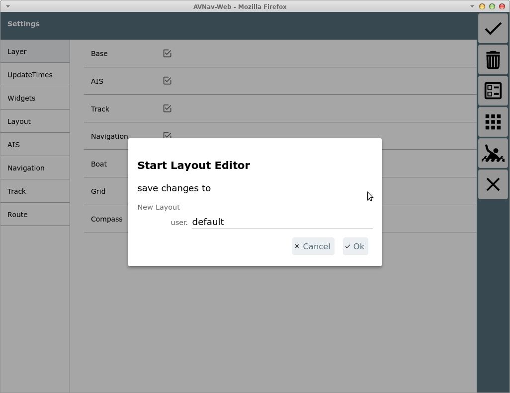
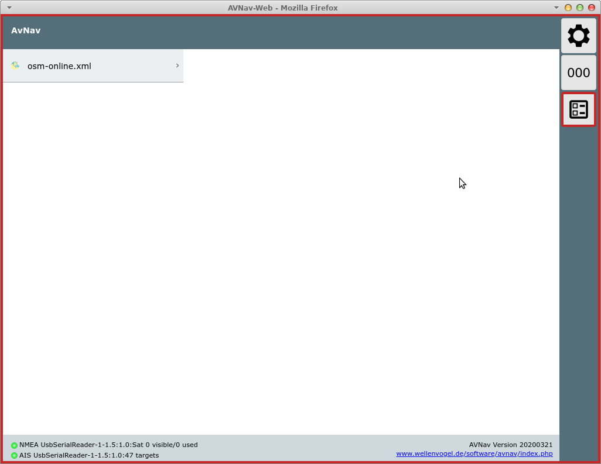
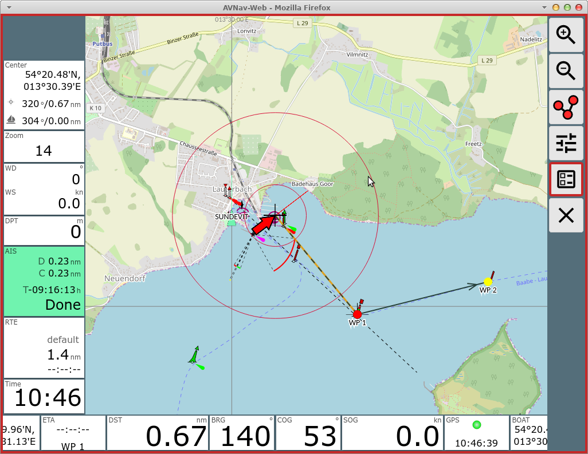
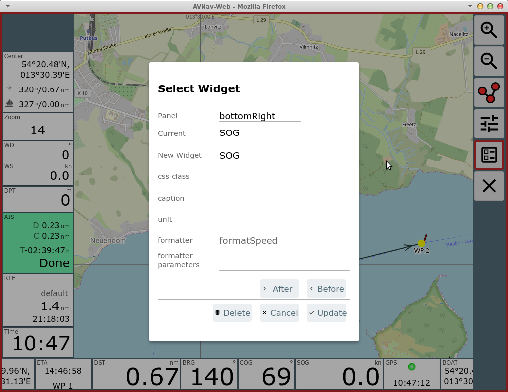
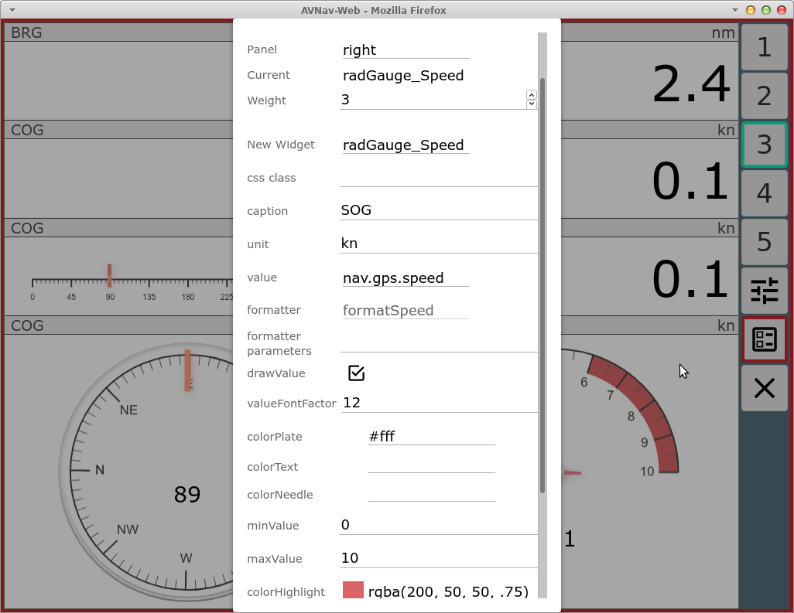
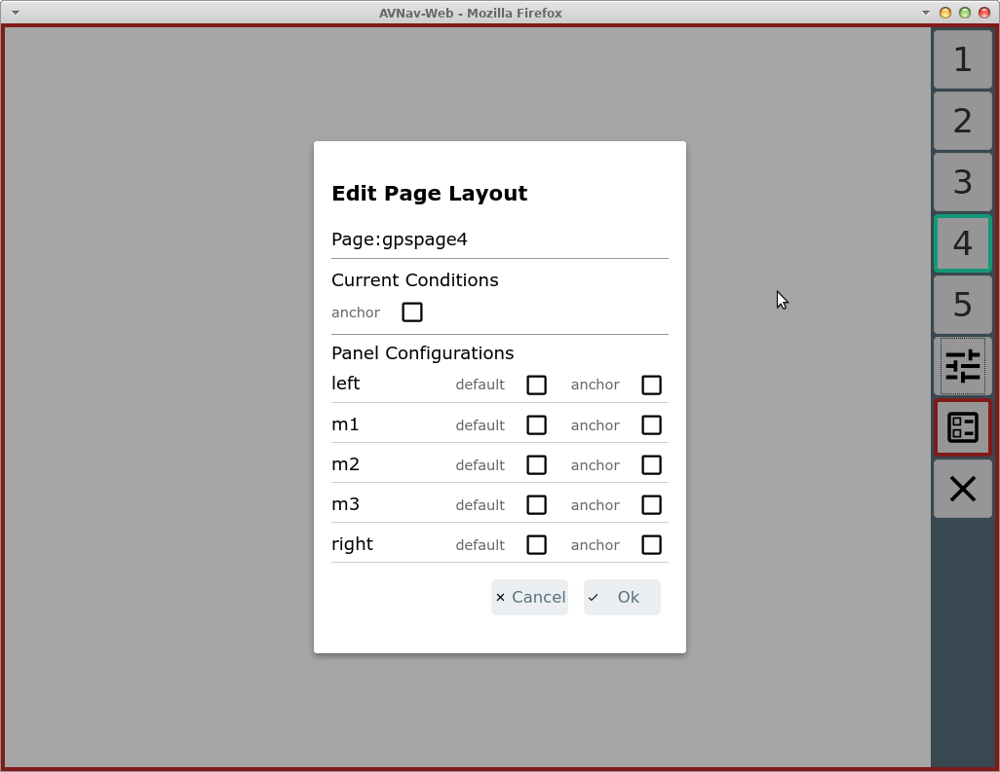
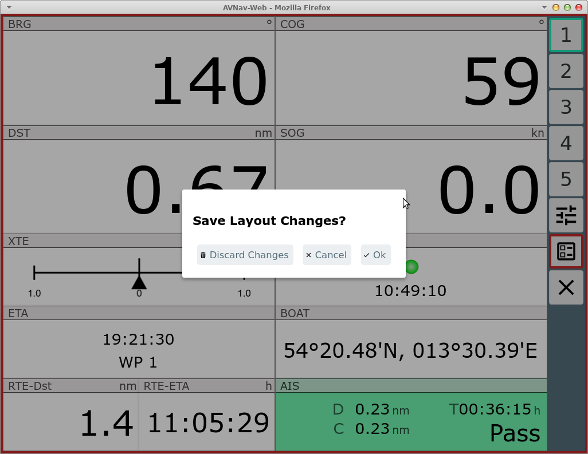
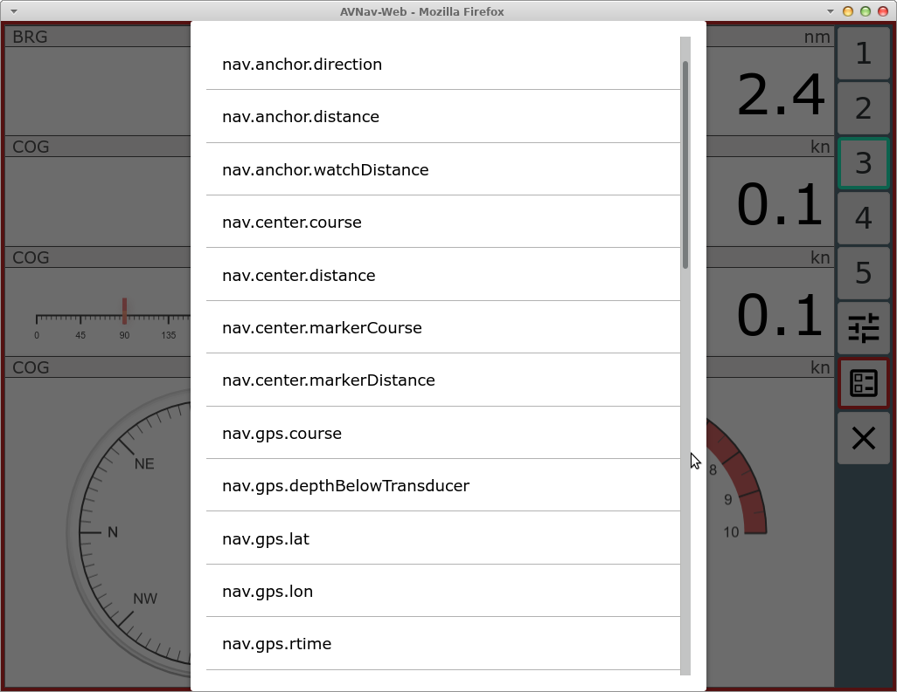

Die Anzeigen auf der Navigationsseite und im Dashboard werden über eine Konfigurationsdatei ("layout") gesteuert. Das ist eine Json-Datei. AvNav bringt selbst einige solcher Dateien mit (zu erkennen am Namens-Prefix system.). Der Benutzer kann eigene Layouts speichern (Namensprefix: user.). Diese Dateien werden unterhalb des Datenverzeichnisses (/home/pi/avnav/data auf dem raspberry) im Ordner "layout" abgelegt. Man kann diese Dateien direkt bearbeiten (innerhalb von avnav), sie herunterladen (und wieder hochladen) oder man kann das Layout innerhalb von AvNav editieren ("layout editor").
Der bevorzugte Weg sollte hierbei der Layout-Editor sein, da dieser die wenigsten Fehlerquellen bietet.
Die Auswahl des aktuell genutzten Layouts erfolgt über Einstellungen  /Layout
/Layout
Der Start des Layout-Editors erfolgt über die Einstellungsseite  , Layouts
, Layouts  .
.
Anpassung von AvNav
Hier wird der Name für das layout-File vergeben. Wenn bisher ein System-Layout aktiv war, wird ein user-Layout mit dem gleichen Namen erzeugt und aktiviert. Falls das Layout schon existiert, wird gefragt, ob es überschrieben werden soll (das kann am Ende noch verhindert werden, in dem alle Änderungen verworfen werden).
Nach dem Start bekommt die App einen roten Rand und es sind nur noch die Seiten sichtbar, auf denen das Layout angepasst werden kann.

Durch Auswahl einer Karte gelangt man wie immer zur Navigationsseite.

Die Anzeigen sind auf allen relevanten Seiten in sogenannten "Panels"
angeordnet.
Innerhalb des jeweiligen Panels können die Anzeigen im Editor-Modus
einfach verschoben werden.
Auf der Navigationsseite können die Panels unterschiedlich belegt werden,
je nachdem ob ein eher schmales Display vorhanden ist (small) oder ein
breiteres (die Grenze dafür kann in den Settings eingestellt werden).
Über  kann
die Konfiguration für die Panels auf der jeweiligen Seite aufgerufen
werden.
kann
die Konfiguration für die Panels auf der jeweiligen Seite aufgerufen
werden.
Im Bild sind die vorhandenen Panels markiert. Im Dialog kann ausgewählt werden, welche der Panels jeweils sichtbar sein sollen. Wenn in der Spalte "small" ein Häkchen gesetzt ist, bedeutet das, dass bei schmalem Bildschirm das Panel anders belegt werden kann. Im Beispiel ist das Top-Panel im normalen Modus nicht sichtbar, sondern nur im schmalen, das Left-Panel ist jeweils unterschiedlich belegt. Die beiden unteren Panels sind in beiden Modi gleich belegt. Unter "Current Conditions" kann ausgewählt werden, ob die Panels für die Normal-Ansicht oder für die schmale Ansicht bearbeitet werden sollen.
Die beiden unteren Panels können potentiell 2 Reihen von Anzeigen aufnehmen (Einstellung: "2 widget rows"), nicht mehr passende Anzeigen werden ausgeblendet.
Nach Beenden des Panel-Dialogs können jetzt Anzeigen (Widgets) innerhalb der Panels verschoben werden (jedoch nicht von einem Panel zum anderen).
Zum Ändern oder Einfügen eines Widgets klickt man auf ein vorhandenes oder auf ein freies Feld in einem Panel.
Man erhält den folgenden Dialog.
Je nach Art des Widgets sind hier unterschiedliche Werte sichtbar bzw. änderbar. Nicht ausgefüllte Werte haben meist defaults.
Falls das Widget in ein anderes Panel verschoben werden soll, kann man oben das neue Panel auswählen.
Änderungen schliesst man mit "Update" ab.
Unter "New Widget" kann man ein anderes Widget aus der Liste der vorhandenen Widgets auswählen.
Jedes Widget benötigt eine Information, welche Daten es anzeigen soll. Die verfügbaren Daten sind intern in einem Speicher verfügbar und werden über einen Key ausgewählt.
Je nach Art des Widgets ist dieser Key (oder auch mehrere) fest im Widget eingebaut, bei anderen kann man das frei wählen. Fast immer wählbar sind der Titel (caption), die Einheit (unit) und die css Klasse (falls man das Aussehen per css anpassen möchte).
Die meisten Widgets benötigen für die Darstellung einen Formatierer, der den internen Wert in die gewünschte Darstellung wandelt. Meist ist der beim Widget fest vorgegeben. Einige Formatierer akzeptieren eine Komma-getrennte Liste von Parametern um ihr Verhalten anzupassen (z.B. m/s statt kn).
Die folgenden Formatierer sind vorhanden:
| Name | Beschreibung | Parameter |
| formatDecimal | einfache Formatierung als Dezimalzahl | fix, fract, addSpace z.B.: 3,1 |
| formatDistance | Entfernung in nm | ein Parameter (unit): nm - Enterfnung in nm m - Entfernung in m statt nm km - Entfernung in km statt nm |
| formatSpeed | Geschwindigkeit in kn | ein Parameter (unit): kn - knoten ms - m/s statt kn kmh - km/h statt kn |
| formatDirection | Formatieren einen Gradwert | ein Parameter: inputRadian - Input in rad statt ° |
| formatTime | Formatiere einen Zeitwert (Wert muss intern ein Date Wert sein) (hh:mm:ss) | |
| formatClock | Formatiere einen Zeitwert (Wert muss intern ein Date Wert sein) (hh:mm) | |
| formatDateTime | Formatiere Datum und Uhrzeit (Wert muss intern ein Date Wert sein) | |
| formatDate | Formatiere Datum (Wert muss intern ein Date Wert sein) | |
| formatString | gibt den Input unverändert weiter | |
| formatTemperature | Formatiere eine Temperatur (seit 20210106), Input in Kelvin | ein Parameter (unit) celsius, kelvin |
| formatPressure | Formatiere einen Druck (seit 20210106), input in Pa | ein Parameter (unit) pa, hpa, bar |
Plugins oder eigene Erweiterungen können ggf. weitere Formatierer hinzufügen.
Falls man das vorhandene Widget nicht ersetzen möchte, kann man das geänderte Widget davor oder danach einfügen (Before/After).
Falls das Widget weitere Parameter unterstützt, dann werden diese im Dialog angezeigt.

Im Beispiel die Konfiguration für eine grafische Anzeige (avnav nutzt hierzu canvas-gauges).
Von der Navigationsseite kann über die Hauptseite zu den Dashboard Seiten gewechselt werden.
Dashboard Seiten
Es können bis zu 5 Dashboard Seiten konfiguriert werden. Auf jeder Seite sind bis zu 5 Panels möglich.
Auf einer leeren Dashboard Seite muss zunächst die Panel-Konfiguration
erfolgen -  .
.

Auf den Dashboard Seiten kann eine abweichende Konfiguration eingestellt werden, wenn die Ankerwache aktiv ist (im default layout z.B. auf Dashboard Seite 1 genutzt).
Leere Dashboard Seiten erscheinen später nicht in der Anzeige.
Es ist auch eine Konfiguration auf der Seite des Routen-Editors ( von der Navigationsseite aus) möglich, hier
muss allerdings die Liste der Wegepunkte und die Anzeige der editierten
Route immer sichtbar bleiben.
von der Navigationsseite aus) möglich, hier
muss allerdings die Liste der Wegepunkte und die Anzeige der editierten
Route immer sichtbar bleiben.
Nach Abschluss der Layoutbearbeitung muss das Layout noch gespeichert
werden - rot umrandeter Button  auf jeder Seite.
auf jeder Seite.

Hier kann ggf. noch einmal entschieden werden, die Änderungen zu verwerfen.
Das Layout wird im aktuellen Browser sofort aktiv (und auf dem Server gespeichert). Andere Browser erhalten es erst, wenn dort die App neu geladen wird oder das Layout gewechselt wird.
Über die Files/Download Seite  können unter
können unter  die Layout-Files
heruntergeladen/hochgeladen/gelöscht bzw. als Datei bearbeitet werden.
die Layout-Files
heruntergeladen/hochgeladen/gelöscht bzw. als Datei bearbeitet werden.
Das momentan aktive Layout kann hier allerdings nur heruntergeladen werden.
Wenn ein Layout gelöscht wird, das momentan in einem anderen Browser noch aktiv ist, wird dieser es wieder zum Server hochladen, wenn dort die App neu geladen wird. Das muss man ggf. beachten.
Neben einer ganzen Liste von vorkonfigurierten Widgets (wie z.B. SOG, COG, BRG, AisTargetWidget,...) bei denen ggf. nur die Beschriftung und die Parameterisierung des Formatters geändert werden kann, gibt es einige spezielle Widgets
Dieses Widget ist intern die Basis für die meisten anderen Widgets. Man kann damit recht einfach Anzeigen für bestimmte Werte realisieren.
Wichtig ist hier, dass in jedem Falle ein Formatter und ein "value" gewählt werden müssen.
Unter Value bekommt man eine Liste der zur Verfügung stehenden Anzeige-Daten.
Das sind einmal die in AvNav intern vorhandenen Daten. Falls die signalk Integration aktiv ist (nicht unter Android), erscheinen hier auch vorhandene Werte unter vessels/self mit dem Prefix nav.gps.signalk.
Die Auswahl des Formatters muss passend zum Wert erfolgen.
Wie oben bereits erwähnt, stellt AvNav eine Integration von canvas-gauges bereit. Basierend auf dieser Bibliothek bringt AvNav einige vorbereitete Widgets mit, deren Parameter jeweils konfigurierbar sind.
Es gibt lineare Anzeigen (linGauge...) oder radiale Anzeigen
(radGauge...).
Über den Layout-Editor sind nur bestimmte Parameter direkt anpassbar.
Falls die Anzeigen weitergehend verändert werden sollen, sollte dazu eine Anpassung über nutzerspezifischen JavaScript code erfolgen.
Das SignalK plugin bringt auch einige Widgets mit, die insbesondere Formatter für Daten enthalten, die so in avnav sonst nicht verfügbar sind - z.B. signalKCelsius zur Anzeige von Temperaturen. Diese machen natürlich nur Sinn, wenn entsprechende SignalK Daten vorhanden sind.
Falls man das Aussehen eines Widgets anpassen möchte, empfiehlt es sich, eine neue css class zu vergeben - auf diese kann man dann mit nutzerspezifischem css zugreifen.
Mit nutzerspezifischem Java Script Code kann man relativ leicht auch eigene Anzeigen einbauen - sowohl mit simplem HTML als auch mit grafischen Elementen.